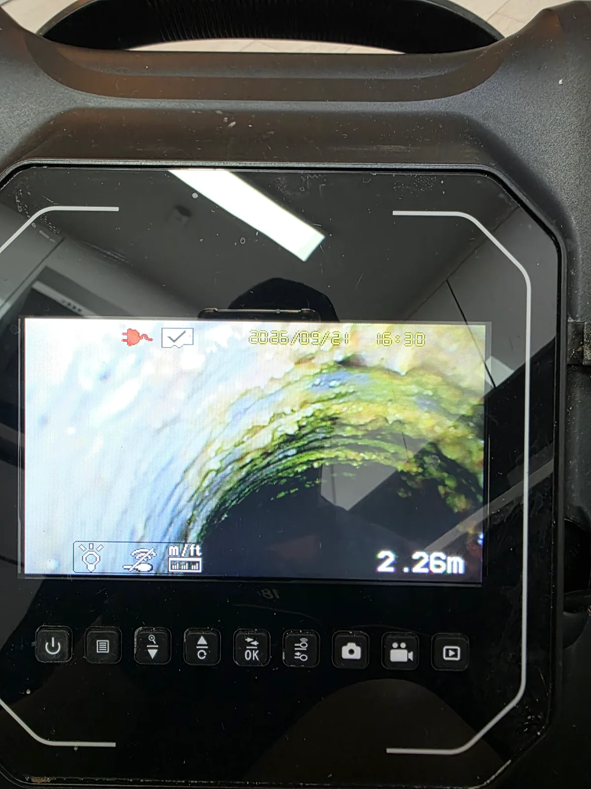
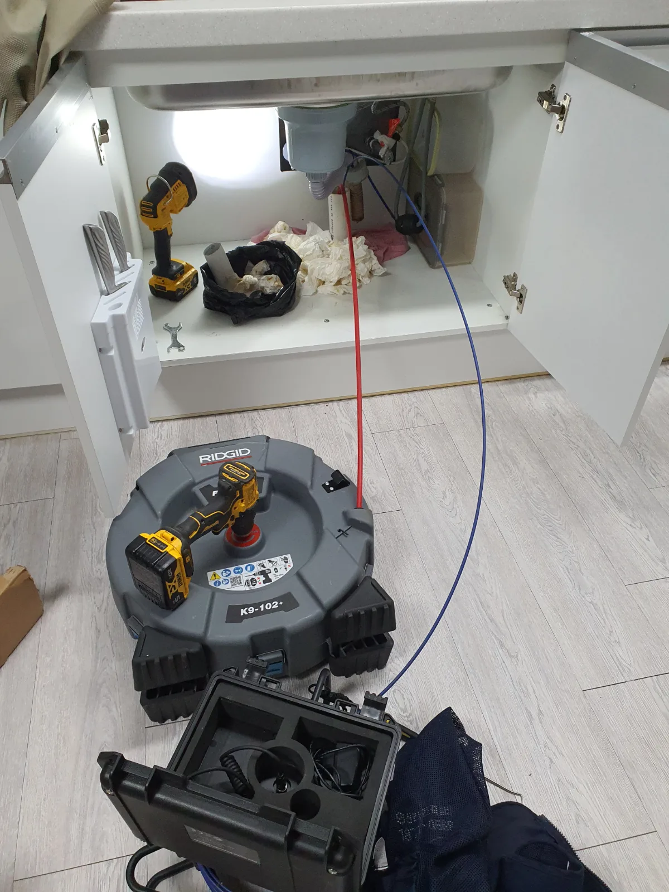

강남구 압구정동 싱크대막힘 | 고급빌라 싱크대막힘 석션 후 내시경 진단하고 샤프트로
강남구 압구정동 싱크대막힘 고급빌라 싱크대막힘 현장에 출동해 석션으로 배관 입구부를 먼저 확보하고 배관 내시경으로 내부 오염 상태를 확인한 뒤
서울 · 강남구 · 싱크대막힘
강남 싱크대막힘으로 물이 늦게 빠지거나 주방 배수구에서 오수가 역류한다면, 기름때 축적과 배관 구조를 함께 확인해야 합니다. 신라건축설비는 배수 상태와 막힌 위치를 진단한 뒤 석션·샤프트·고압세척 중 필요한 작업을 안내합니다. 역삼동·대치동·개포동의 실제 해결사례에서 원인과 작업 과정을 확인하세요.
물이 천천히 빠지는 증상, 싱크대 물이 안 내려가는 증상, 싱크대 역류, 악취와 반복 막힘처럼 비슷해 보이는 증상도 원인 구간은 다를 수 있습니다. 신라건축설비는 실제 출동 기록을 기준으로 증상·원인·사용 장비·작업 결과를 공개합니다.
주요 점검·작업: 석션·샤프트·배관내시경 점검과 배관 스케일링
싱크대막힘·싱크대뚫는업체 전체 서비스와 지역별 사례 보기 →
강남구 압구정동 싱크대막힘 고급빌라 싱크대막힘 현장에 출동해 석션으로 배관 입구부를 먼저 확보하고 배관 내시경으로 내부 오염 상태를 확인한 뒤

강남구 대치동 싱크대막힘 오래된 아파트 싱크대막힘 현장에 출동해 배관 내시경으로 내부 상태와 막힘 구간을 점검하고 RIDGID K9 102

강남구 역삼동 싱크대막힘 역삼동에서 싱크대 사용수가 바닥 배수구로 역류해 긴급출동했습니다 배관 입구부터 쌓여 있던 기름때와 이물질을 석션으로

강남구 개포동 싱크대막힘 신라건축설비가 개포동 싱크대 하부 배관을 내시경으로 점검하고 샤프트로 내부 축적물을 제거한 뒤 고압세척과 내시경

강남구 역삼동 싱크대막힘 긴 횡주관의 오수와 기름때를 석션한 뒤 내시경 점검 및 샤프트 배관스케일링 후 통수시험

강남구 대치동 싱크대막힘 석션으로 오염수와 이물질을 제거하고 샤프트 배관스케일링 및 내시경 점검 후 통수 확인
기름때와 음식물 찌꺼기가 배관 안쪽에 쌓이거나 배관 구배와 긴 횡주관 때문에 오수가 정체될 수 있습니다. 역삼동 카페 사례에서는 석션으로 오수를 제거한 뒤 내시경으로 내부를 확인하고 샤프트로 벽면의 오염층을 정리했습니다. 반복될 때는 통수 여부뿐 아니라 남은 오염과 배관 구조를 함께 확인합니다.
배관 일부가 좁아져 있으면 적은 물은 내려가다가 한꺼번에 많은 물이 유입될 때 역류할 수 있습니다. 연결된 다른 배수시설이나 공용배관의 영향도 확인해야 합니다. 물이 다시 올라오면 사용을 멈추고 발생 시간과 다른 배수구의 상태를 알려주세요.
싱크대 한 곳에서만 생기는지, 다른 배수구나 여러 세대에서도 함께 발생하는지를 먼저 확인합니다. 여러 곳에서 증상이 나타나면 공용 구간을 의심할 수 있지만 증상만으로 확정하지 않습니다. 배관 경로와 내시경 점검 결과를 확인하고 공용배관이 의심되면 관리사무소와 점검 범위를 협의합니다.
스프링 관통으로 물길이 열려도 벽면에 기름때가 남아 재발하는 경우가 있습니다. 샤프트는 회전 도구로 부착물을 제거하고, 고압세척은 물을 이용해 오염물을 씻어내는 방식입니다. 개포동 사례에서는 샤프트 작업 후 고압세척을 진행했습니다. 모든 현장에 같은 장비를 쓰지 않고 배관 재질·상태·접근 위치와 오염 정도를 확인해 정합니다.
막힌 위치와 구간 길이, 오염 정도, 배관 접근 난이도, 필요한 장비와 작업 범위에 따라 달라집니다. 상담 시 증상과 위치를 확인하고 현장 진단 후 작업 범위와 비용을 안내합니다. 출장·야간·추가 장비 비용이 있는지도 작업 전에 확인하세요.
거름망에 보이는 음식물 찌꺼기를 치우는 정도는 직접 관리할 수 있습니다. 물이 전혀 빠지지 않거나 반복 역류, 하부 누수, 여러 배수구의 동시 문제가 있으면 사용을 멈추고 점검을 요청하세요. 강한 약품을 섞거나 배관을 무리하게 분해하지 말고, 이미 약품을 사용했다면 작업자에게 알려주세요.
기름과 음식물 건더기를 배수구에 버리지 않고 거름망을 자주 비워주세요. 배수 속도가 느려지거나 냄새와 역류가 반복되면 배관 상태를 점검합니다. 긴 횡주관이나 구배 문제가 있는 현장은 오염 제거 후에도 구조에 맞는 관리가 필요합니다.